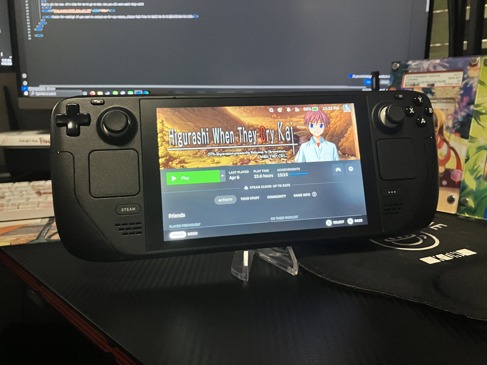

1game1week - Week 18 (4/30/25) - Higurashi When They Cry: Chapter 6 - Tsumihoroboshi
Hey all! It's week 18! (4/30 -> 5/7)
It's late at night right now. I actually totally forgot it was Wednesday...
This week, I officially crossed over the 29 games beat for 2025. That means this year has been the most games I've finished, in a year. I was really happy crossing that barrier.
Of course, it's supposed to come naturally, if I'm really trying to beat a game every week... I'd have to beat at least 52, right?
I guess it's just a natural thing. If you run a mile everyday, your time will eventually cross whatever goal you set your mind to. Maybe that's why it feels exhilirating when you actually attain your goal.
It's probably not that simple. But it'd be neat if it was, wouldn't it?
Game pickups should be slowing down for a little while now, I hope. I haven't been too active in buying new things. Though, I do have a few open preorders... I'm hoping at least next week, I can say there'll be no new games to add to the backlog.
New games from 4/23 -> 4/29:
* The Hundred Line -Last Defense Academy- (Switch)
Currently, my backlog is at +13 (lower is better).
And onto 1g1w. Once again, a game is considered "beaten" if I've accomplished the main objective of the game.
GAME: Higurashi When They Cry: Chapter 6 - Tsumihoroboshi
PLATFORM: PC (Steam Deck)
STARTED ON: 3/26
BEATEN ON: 4/7
TOTAL PLAYTIME: 23.6 Hours
Since this will be my fourth (and counting) Higurashi post this year, there is very little I can say anymore.
As of today, I'm actually just about to enter the final eight-hour stretch of the last chapter in Higurashi, Matsuribayashi.
All the secrets have been revealed. It's been really fun.
I mentioned it before, but Higurashi is a social game, where you collaborate and talk with your friends to figure out the mystery. Only using your own thoughts often gets you nowhere.
There's quite a few things I would never have even considered, that were completely right, that were pointed out to me as theories.
While it's great and all to finally have the truth in my grasp... it's a bittersweet feeling. It's the same feeling as when you wish something just would never end.
I will never be able to experience Hinamizawa's mystery again. I will never get to theorize and be completely wrong (or completely right) about different aspects of the novel again.
As you can probably tell by the total playtime, Higurashi is a huge novel. That's why... it'll be sad once it's all over, even if it's a happy end.
That's all for now. It's time for me to go to bed. See you all next week! Stay safe!

Thanks for reading! If you need to contact me for any reason, please feel free to email me at aru@hoshikawa-aru.com.